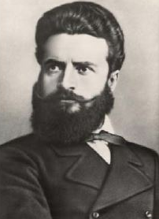

Оставащо време: 10:00
На 1ви ноември отбелязваме:
Кой приема законите в Република България?
Кой девиз е изписан върху герба на Република България?
Кое твърдение за Рило-Родопската област е ВЯРНО?
С какво се свързва управлението на хан Аспарух?
Управлението на кой владетел наричат „Златен век“ на българската култура?
Кой е авторът на „Рибния буквар“?
Коя е столицата на българската държава по времето на Асеневци?
Обществото включва различни групи от хора. Коя от посочените е най-малката?
Коя българска личност е изобразена на портрета?
| Въпрос | Отговор |
|---|---|
| 1 | а) |
| 2 | в) |
| 3 | а) |
| 4 | б) |
| 5 | а) |
| 6 | б) |
| 7 | в) |
| 8 | б) |
| 9 | в) |
| 10 | а) |